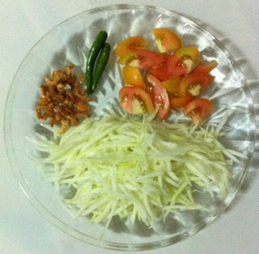

သေဘၤာသီး ေထာင္း
ပါဝင္ ပစၥည္းမ်ား
သေဘၤာသီး
သေဘၤာသီး ေထာင္းအတြက္ ျပဳလုပ္ထားေသာ အရသာမႈန္႔
ခရမ္းခ်ဥ္သီး ၁လံုး
ငရုတ္သီးစိမ္း ၂ေတာင့္
ပုဇြန္ေျခာက္ အနည္းငယ္
ၾကက္သြန္ျဖဴ ၂ေျမွာင့္
သံပုရာသီး ၁ျခမ္း
ေျမပဲ
ေရ
ကန္စြန္းရြက္ အနည္းငယ္

ျပဳလုပ္နည္း အဆင့္ဆင့္
အရင္ဆံုုး ငရုတ္သီးစိမ္း၊ ၾကက္သြန္ျဖဴနဲ႔ ပုစြန္ေျခာက္ နည္းနည္း ကို ေထာင္းပါတယ္။
မညက္တညက္ အေနရလာရင္ ခရမ္းခ်ဥ္သီး ထည့္၊ သေဘၤာသီး ျခစ္ထားတာ ထည့္ျပီး ေထာင္းလိုက္၊ ဇြန္းႏွင့္ ေမႊလုိက္ လုပ္ျပီး အရသာမႈန္႔ကို လိုသေလာက္ မွန္းျပီး ေရ ေဖ်ာ္ထည့္၊ ငံျပာရည္ နည္းနည္းထည့္၊ သၾကားနည္းနည္းထည့္၊ သံပုရာသီး ၁ျခမ္း ညွစ္ထည့္ျပီး အရသာ ျမည္းၾကည့္ပါ။ ဆိုင္ေတြမွာေတာ့ သေဘၤာသီး ေထာင္းထဲ ကန္စြန္းရြက္ ထည့္ပါတယ္။